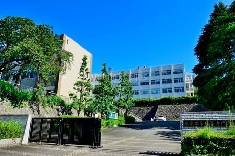

Sato Research Group
個人管理の研究・教育活動紹介ページ
Tribology Research by Kaisei Sato
ナノスケール界面の理解に基づき，摩擦・摩耗・潤滑現象の制御を目指す．
Understanding nanoscale interfaces to control friction, wear, and lubrication.

News お知らせ
-
論文
Tribology International に論文が掲載されました
11月10日，Tribology International に「Linking molecular anchoring, adsorption, boundary-film thickness, and friction of an amine-functionalized block copolymer on ferrous surfaces」が掲載されました。著者は Takeru Omiya，Yuxi Song，佐藤魁星，Enrico Pedretti，Albano Cavaleiro，Arménio C. Serra，Jorge F.J. Coelho，Maria Clelia Righi，Fábio Ferreira，Kenji Fukuzawa，佐々木信也です。
-
学会
ナノ科学シンポジウムジャパン 2026 でポスター発表を行い，最優秀賞を受賞しました
10月29日，ナノ科学シンポジウムジャパン 2026（東京大学 武田ホール）でポスター発表を行い，最優秀賞を受賞しました。演題は「周波数原子間力顕微鏡を用いたせん断場におけるイオン液体中固液界面構造と横力同時計測」です。
-
学会
ACSIN-16 / ICSPM34 で口頭発表を行いました
10月21日，ACSIN-16 / ICSPM34（姫路，10月19日〜23日）で口頭発表を行いました。演題は「Effect of Solvent Molecular Chain Length on the Viscoelastic Properties of Stearic Acid Monolayers Based on In Situ Observation at the Solid–Liquid Interface」です。共著者は佐々木信也です。
-
委員
ISO/TC 201/SC 9 のメンバーになりました
10月より，ISO/TC 201/SC 9（Scanning probe microscopy）のメンバーになりました。
-
論文
Tribology Online に論文がアクセプトされました
9月24日，Tribology Online に「The Interplay between Polar Base Oils and Ester Additives Influences ZDDP Adsorption and Tribofilm Formation」がアクセプトされました。著者は黒岩侑紀，加藤慎治，姉川健祐，佐藤魁星，佐々木信也です。黒岩侑紀が責任著者（Corresponding Author）です。
-
学会
JVSS 2026「摩擦の科学」で依頼講演を行いました
9月16日，日本表面真空学会 学術講演会2026（JVSS 2026）のセッション「摩擦の科学」（Science of Friction）において依頼講演を行いました。演題は「Nanoscale understanding of friction and lubricated interfaces using atomic force microscopy」です。
-
論文
Tribology Online に論文がアクセプトされました
9月9日，Tribology Online に「Calcium Sulfonate Complex Grease as a Next-Generation Lubricant: Tribofilm Formation and Effect of Additives」がアクセプトされました。著者は林優美，佐藤魁星，佐々木信也です。佐々木信也が責任著者（Corresponding Author）です。
-
論文
日本機械学会誌に記事が掲載されました
8月5日，日本機械学会誌（129巻1293号）に「摩擦の奥にある分子の世界を見つめて（Myメカライフ）」が掲載されました。
-
論文
Tribology Online に論文がアクセプトされました
5月30日，Tribology Online に「Micropitting performance of an e-axle fluid under high speed forced lubrication using a three-roller test」がアクセプトされました。著者は國井卓人，佐藤魁星，佐々木信也です。佐藤魁星が責任著者（Corresponding Author）です。
-
学会
トライボロジー会議 2026 春 東京に参加（発表7件・座長）
5月25日〜27日に開催されたトライボロジー会議 2026 春 東京に参加しました。東京理科大学在籍時の発表を含め，関連発表は計7件となり，潤滑剤セッションの座長も務めました。
-
論文
Tribology Online に論文がアクセプトされました
5月22日，Tribology Online に「Fatigue Wear Mechanisms of Carburized and Nitrocarburized Steels under Simulated e-axle Conditions」がアクセプトされました。
-
学会
STLE Annual Meeting に参加（発表2件，Session Chair）
5月17日～21日，STLE Annual Meeting に参加し，口頭発表を2件行いました。また Nanotribology セッションの Session Chair を務めました。
-
キャンパス
体育祭が6年ぶりにグラウンドで開催されました
5月13日，東京工業高等専門学校の体育祭が，6年ぶりにグラウンドで開催されました。
-
受賞
日本機械学会 奨励賞（研究）を受賞しました
4月22日，日本機械学会より奨励賞（研究）を受賞しました。
-
研究室
研究活動を開始しました
個人管理の研究・教育活動紹介ページを公開しました．
-
メンバー
新しい本科5年生が研究室に配属されました
2026年度の本科5年生が配属され，卒業研究を開始します。